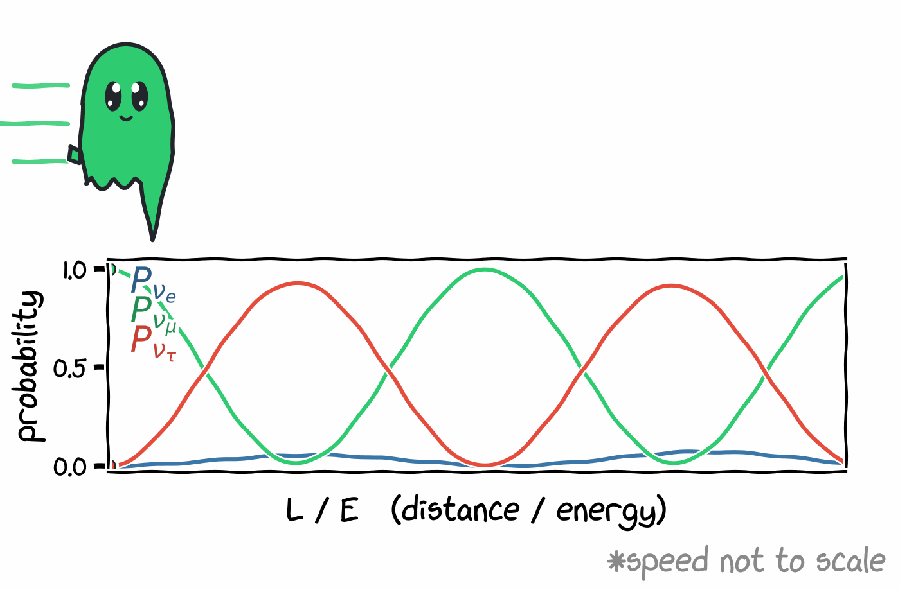
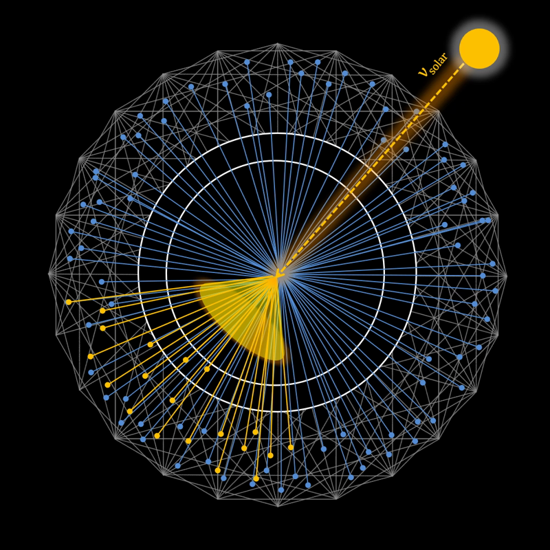

Research
Neutrino oscillations and neutrino astrophysics
Neutrino oscillations
Neutrinos change type as they travel. Measuring this phenomenon precisely could help explain some of the Universe's secrets, such as why there is more matter than antimatter. I co-led one of the three analysis teams and built the foundational software behind the recent world-leading results from the JUNO experiment, the world's largest liquid scintillator detector (20,000 tons!).
- Measurement of reactor neutrino oscillation with the first JUNO data, Nature 654, 343 (2026) Cover article
- Measurement of neutrino oscillation parameters at JUNO and indication of the neutrino mass ordering, arXiv:2609.37895 (2026)

R&D for novel neutrino detectors
DUNE is currently under construction in the US and will study neutrino oscillations with unprecedented precision. DUNE's liquid-argon near detector uses a modular, pixelated design that has never been built before. I work on the research and development of this detector and co-lead the calibration efforts of its prototypes.
- Operation of a modular 3D-pixelated liquid argon time-projection chamber in a neutrino beam, Instruments 10, 18 (2026)
Solar neutrinos
Solar neutrinos show how the Sun and other stars shine. Borexino was the first to detect neutrinos from the carbon-nitrogen-oxygen (CNO) cycle in the Sun, the dominant fusion process in heavier stars. I co-developed methods to constrain the most important background, without which this measurement would not have been possible. I also co-developed techniques to measure the direction of solar neutrinos in a liquid-scintillator detector, where less than 1% of the light carries directional information.
- Experimental evidence of neutrinos produced in the CNO fusion cycle in the Sun, Nature 587, 577 (2020) Cover article
- First directional measurement of sub-MeV solar neutrinos with Borexino, Phys. Rev. Lett. 128, 091803 (2022) Editors’ Suggestion
- Correlated and integrated directionality for sub-MeV solar neutrinos in Borexino, Phys. Rev. D 105, 052002 (2022) Editors’ Suggestion
- Improved measurement of solar neutrinos from the carbon-nitrogen-oxygen cycle by Borexino and its implications for the Standard Solar Model, Phys. Rev. Lett. 129, 252701 (2022) Editors’ Suggestion, Featured in Physics
- Final results of Borexino on CNO solar neutrinos, Phys. Rev. D 108, 102005 (2023) Editors’ Suggestion

Geoneutrinos
Geoneutrinos reveal how much of the Earth's internal heat comes from radioactivity and are the only direct probe of the radioactive elements deep inside the Earth. I led Borexino's most precise geoneutrino measurement and evaluated what JUNO will be able to measure. JUNO's recent paper also reports a world-leading geoneutrino measurement, extracted together with the oscillation parameters.
- Comprehensive geoneutrino analysis with Borexino, Phys. Rev. D 101, 012009 (2020) Editors’ Suggestion, Featured in Physics
- Prospects for geoneutrino detection with JUNO, Chin. Phys. C 50, 113001 (2026)
Full publication list on Google Scholar and INSPIRE.